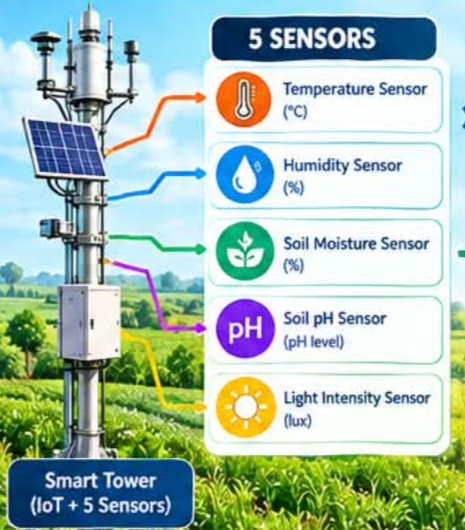
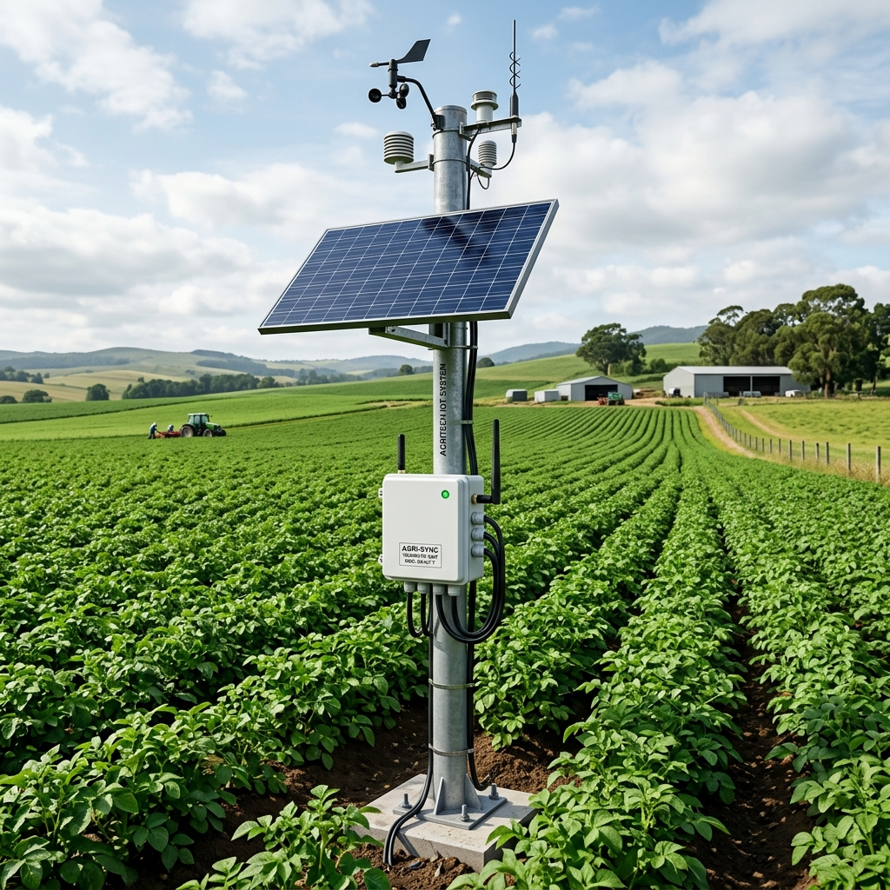

கோயம்புத்தூர் ஸ்மார்ட் பண்ணை பிரிவு 4B
கோயம்புத்தூர் வயல் • நேரலை சென்சார்கள் இயங்குகின்றன
Smart Tower (IoT + 5 Sensors) Online • 4G / LoRa
Primary Hardware Telemetry Mast & Central Sensor Hub • Coimbatore Sector 4B

Temperature Sensor (°C)
Optimalவெப்பநிலை உணரி • SHT40 + DS18B20 Dual Probe
Humidity Sensor (%)
Normalகாற்றின் ஈரப்பதம் • Dew Point: 21.4°C
Soil Moisture Sensor (%)
Goodமண் ஈரப்பதம் உணரி • FDR Probe Depth: 15cm
Soil pH Sensor (pH level)
Neutralமண் அமில-கார நிலை • ISFET Solid-State Electrode
Light Intensity Sensor (lux)
Full Sunசூரிய ஒளி தீவிரம் • BH1750 PAR: 1,420 µmol/m²/s

Autonomous Weather & IoT Mast Station
Solar powered with 20W Monocrystalline PV and MPPT charging. Dual telemetry via 4G Cat-M1 and LoRaWAN long-range broadcast.
Reduce afternoon valve irrigation by 15% due to forecasted evening showers. Apply organic potassium booster tomorrow morning.
Soil & Field Telemetry
4 IoT Sensors Connected
Soil Acidity (pH)
Water Tank Level
Soil Temp
Pest Threat
Automated Crop & Soil Parameters
தானியங்கி அளவுருக்கள் மற்றும் பாசனக் கட்டுப்பாடு
மண் ஈரப்பதம் இலக்கு
சொட்டு நீர் பாசன வேகம்
உரக்கலவை உட்செலுத்துதல் (N-P-K)
பாசன வால்வுகள்
2 வால்வுகள் இயங்குகின்றனமுதன்மை பாசன வால்வு
தக்காளி தோட்டம் A • 15 லி/நிமிடம்
இரண்டாம் நிலை வால்வு
காய்கறி தோட்டம் B • 8 லி/நிமிடம்
AI Crop Health Scanner
பயிர் நோய் பகுப்பாய்வு & பட ஆய்வு
பயிர் இலை படம் எடுக்கவும் அல்லது பதிவேற்றவும்
கேமரா மூலம் படம் எடுத்து அல்லது பதிவேற்றி உடனடி AI நோய் கண்டறிதல் பெறவும்
Real CCTV & Crop Monitor
தோட்டத்து நேரலை கண்காணிப்பு
Camera is not connected
உழவன் தோழன் AI
Groq / Geminiநேரலை வேளாண் வழிகாட்டி
TNAU Agronomy Insights

"Humidity is optimal for tomato and paddy foliage in the region. Maintain 5cm water level and spray neem oil if leaf miner appears."
"நீர் மட்டத்தை 5 செ.மீ பராமரிக்கவும். வேப்பெண்ணெய் தெளிக்கவும்."